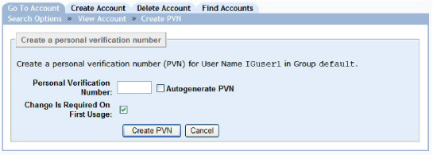

|
IdentityGuard Server 12.0 Administration Guide |
|
IdentityGuard Server 12.0 Administration Guide |
Administrators with applicable permissions can set the PVN for the user by typing one or by using the Automatic Generation option to generate a random PVN for a user.
If a PVN lifetime in days is specified in the policy, it is automatically added to the creation date of the PVN and the expiry date is shown in the User Account Detail view. After a PVN has expired, users are forced to update the PVN when they try to login using the expired PVN.
To create a PVN for a user
1. Find one or more users without a PVN. (See Searching for users based on personal verification numbers.)
On the Find Accounts page, be sure to select the Doesn’t have a PVN option as part of your search criteria.
2. Select a user on the Search Results page.
The Account Information pane appears for the user.
3. Under Authentication Types, click Personal Verification Number.
4. Click Create PVN.
The Create PVN page appears.

5. Set a PVN value in one of two ways:
● Enter a value next to Personal Verification Number. The value must match the length set by policy
● Select Autogenerate PVN to have Entrust IdentityGuard create a random number.
6. Select Change Is Required On First Usage to force the user assigned the PVN to provide an update the first time the PVN is used. Use this option if administrators create or distribute PVNs to users to ensure that users operate with a PVN known only to them. This is not necessary if users create their own PVNs through your application. Depending on policy, you may not be able to deselect this option (see Forcing PVN updates.)
Note: The Radius proxy does not support the updating of PVNs except through the Password Authentication Protocol (PAP).
7. Click Create PVN.
The Account Information pane reappears for the user showing the new PVN information.
After you create user PVNs, you need to distribute them to your users. Alternatively, you can have the user create and update their own PVN in your application interface (see Having a user set up a PVN).